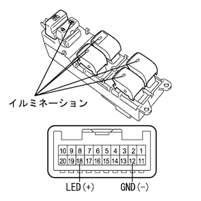

Power Window Regulator Master Switch Assembly Inspection |
| 1. Inspect Power Window Regulator Master Switch Assembly |
 |
Illumination (LED) Inspection
Illumination (LED) Lighting Inspection
Check that the illumination (LED) in the power window regulator master switch assembly illuminates when battery positive is connected to connector terminal 18 (LED) and battery negative is connected to terminal 12 (GND).
| Tester Connection (Terminal Symbol) | Specified Condition |
|---|---|
| 18(LED) - 12(GND) | Comes on |